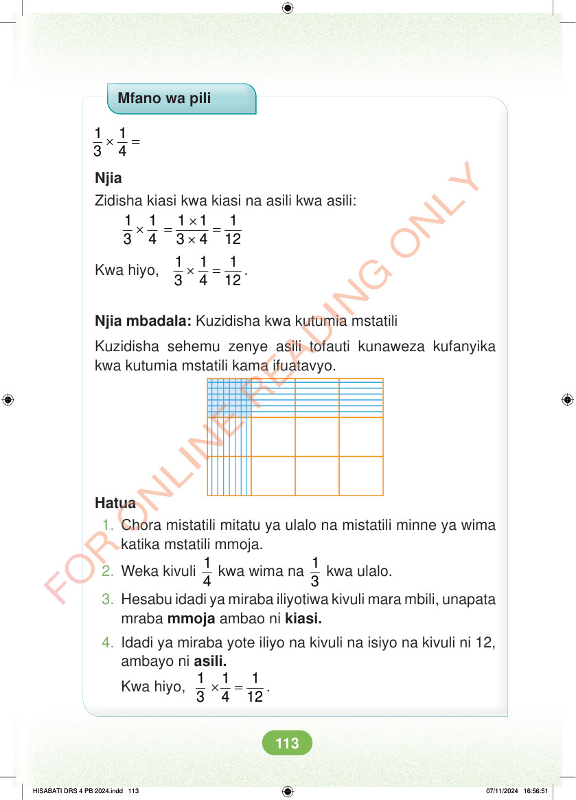

Mfano wa pili × = 1 1 3 4 Njia Zidisha kiasi kwa kiasi na asili kwa asili: × × = = × 1 1 1 1 1 3 4 3 4 12 Kwa hiyo, × = 1 1 1 3 4 12 . Njia mbadala: Kuzidisha kwa kutumia mstatili Kuzidisha sehemu zenye asili tofauti kunaweza kufanyika kwa kutumia mstatili kama ifuatavyo. Hatua 1. Chora mistatili mitatu ya ulalo na mistatili minne ya wima katika mstatili mmoja. 2. Weka kivuli 1 4 kwa wima na 1 3 kwa ulalo. 3. Hesabu idadi ya miraba iliyotiwa kivuli mara mbili, unapata mraba mmoja ambao ni kiasi. 4. Idadi ya miraba yote iliyo na kivuli na isiyo na kivuli ni 12, ambayo ni asili. Kwa hiyo, × = 1 1 1 3 4 12 . HISABATI DRS 4 PB 2024.indd 113 HISABATI DRS 4 PB 2024.indd 113 07/11/2024 16:56:51 07/11/2024 16:56:51